Producción Electrónica
Ciclo 2026 · Ibero Puebla
Bienvenido al registro de prácticas
Esta página está hecha con el propósito de documentar los trabajos y prácticas de la materia de Producción Electrónica.
Integrantes
Estudiantes de la materia de Producción Electrónica, encargados de documentar cada práctica, proceso y aprendizaje desarrollado a lo largo del curso.
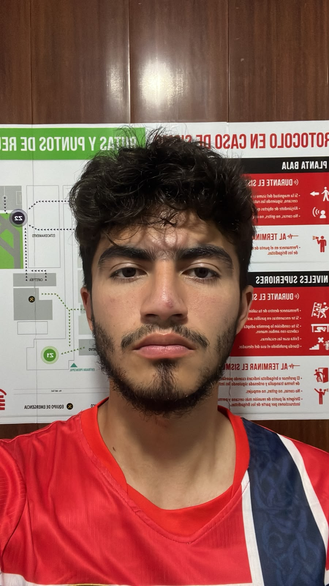
Objetivos de la Materia
Registrar y organizar el seguimiento de la producción electrónica realizada en clase y los conocimientos adquiridos, evidenciando nuestro avance académico y el cumplimiento de las metas de la materia.
Objetivos Específicos
Primer Objetivo
Aprender a usar el editor de esquemas para la fabricación de placas.
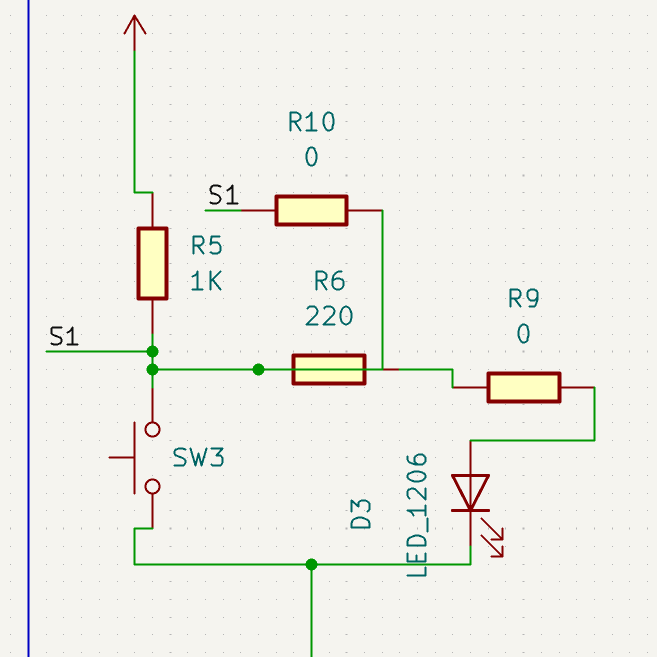
Segundo Objetivo
Aprender a usar el editor de placas para enviar la placa a cortar.
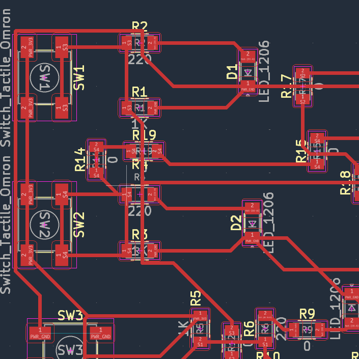
Tercer Objetivo
Aprender a usar la página web Mods para modificar los archivos para la cortadora.
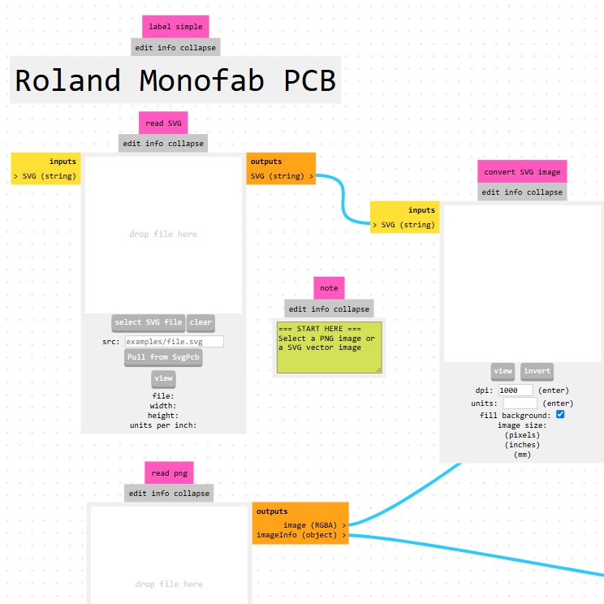
Cuarto Objetivo
Aprender a calibrar la cortadora de placas Roland para cortar la placa de cobre.
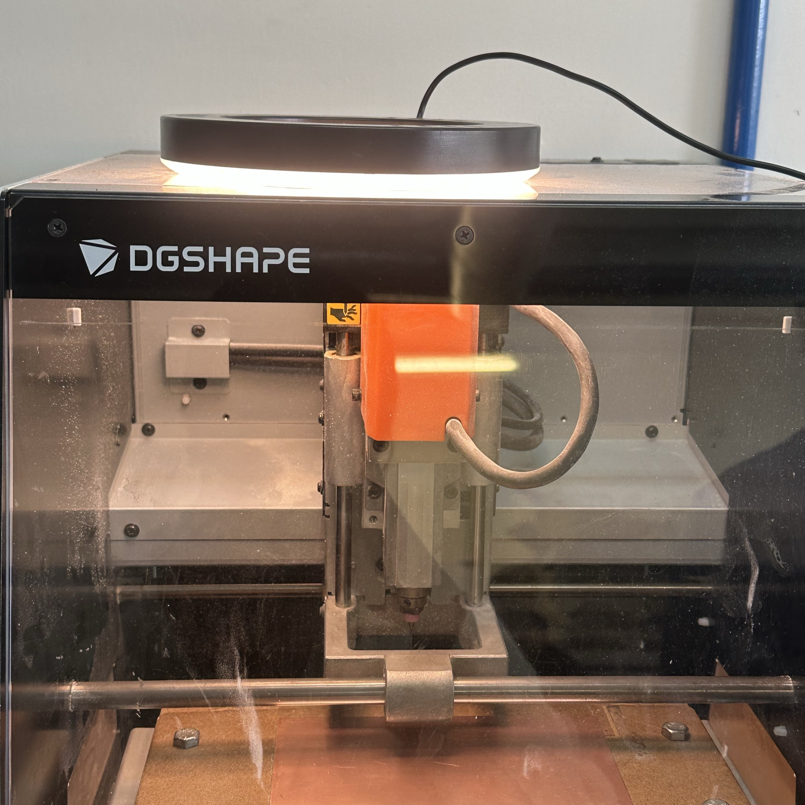
Prácticas del curso
Selecciona una práctica para ver el proceso completo.
Instalación de KiCad para la fabricación de la PCB
Documentación de la instalación de KiCad · Primer corte.
1. Descargar el programa
Se descargará el programa KiCad para la fabricación y el diseño de circuitos en la siguiente página web KiCad. En la página web encontrarás el botón de instalación.
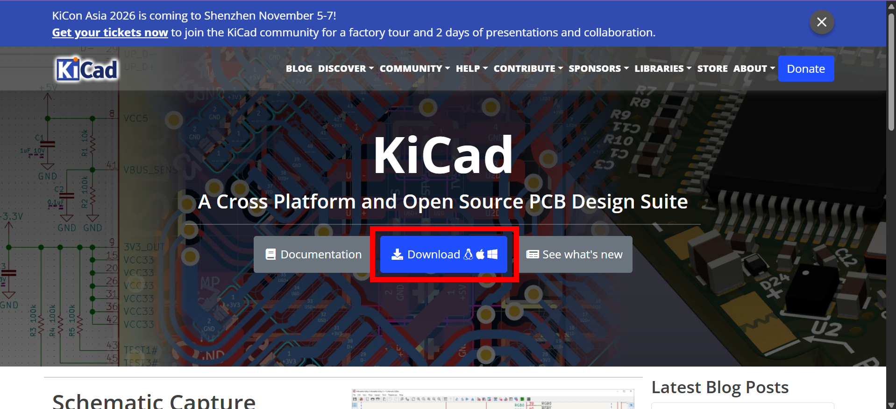
Seleccione el sistema operativo de su preferencia y proceda a instalar KiCad.
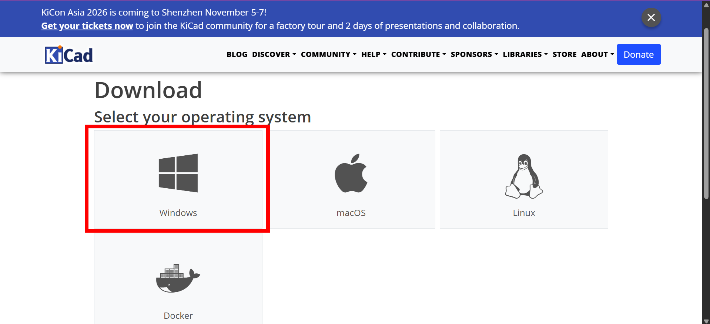
2. Instalación de la librería FabLab
Una vez instalado el programa KiCad, se debe instalar la librería llamada FabLab. Para ello, debe entrar al administrador de elementos y contenido. Puede acceder de las dos formas que se indican en la siguiente imagen.
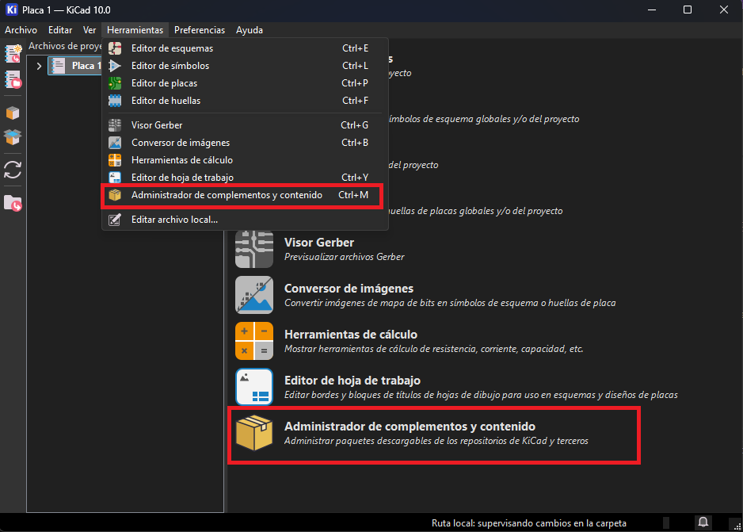
Una vez en el administrador de elementos y contenido, se instala la librería FabLab. Una vez finalizada la instalación, ya puede comenzar a fabricar.
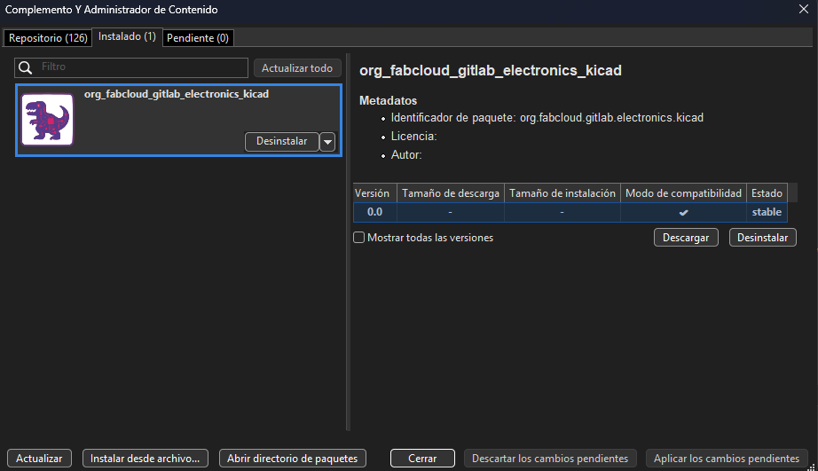
Fabricación de la primera placa
Documentación de fabricación · Primer corte.
1. Crear un nuevo proyecto
Para crear un nuevo proyecto, se debe seleccionar el botón "Archivo", ubicado en la parte superior izquierda. Después, se debe seleccionar el botón "Nuevo Proyecto", como se muestra en la siguiente imagen.
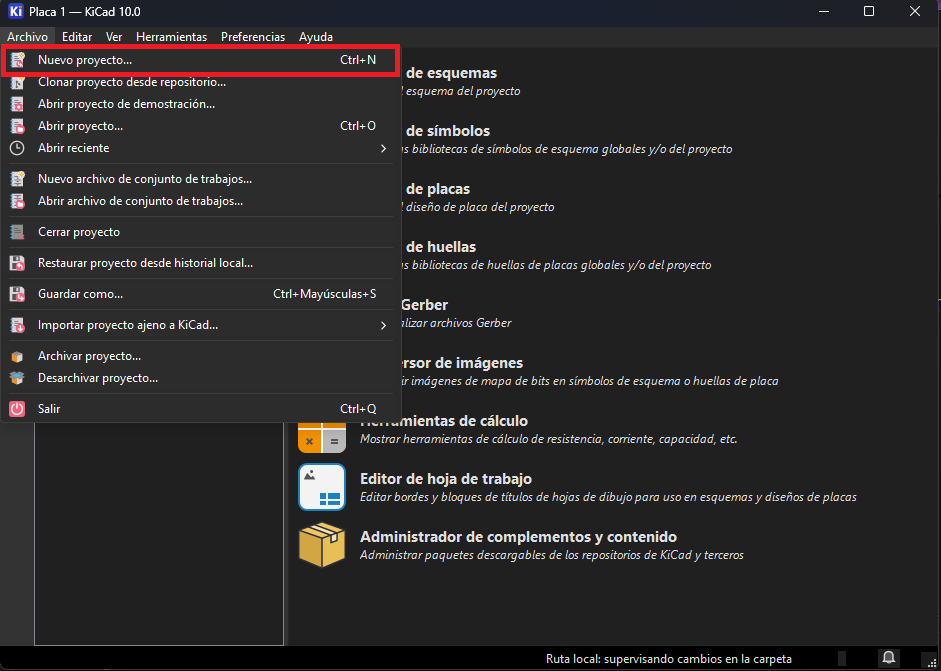
Una vez creado el nuevo proyecto, se debe seleccionar la opción predeterminada de KiCad, como se muestra en la imagen, para comenzar a trabajar en nuestro proyecto.
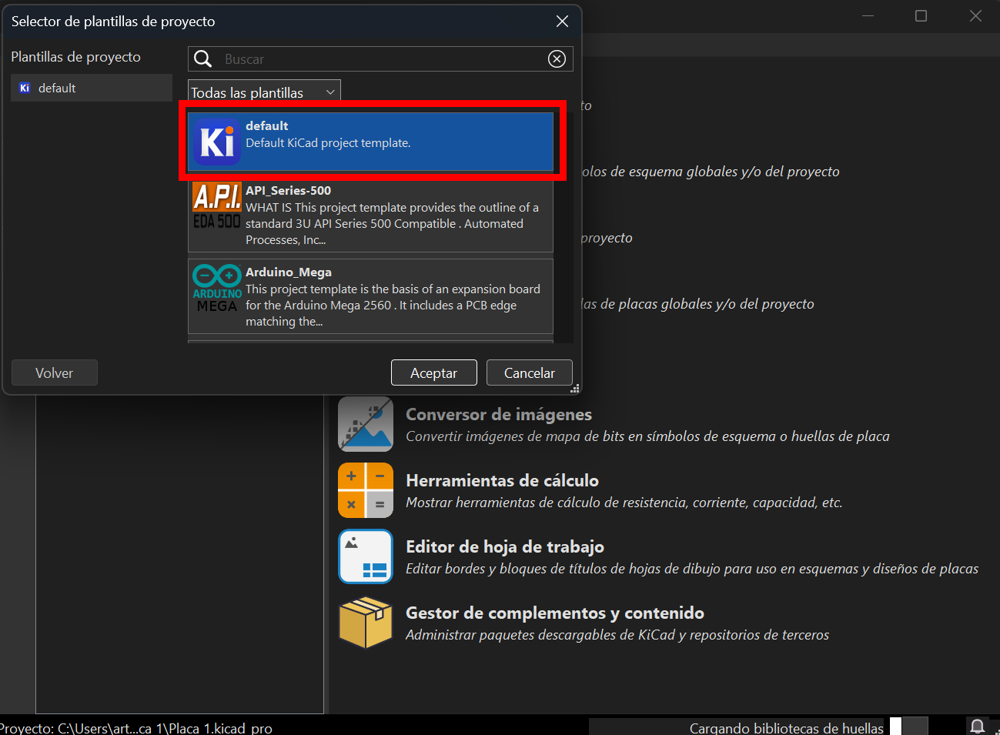
2. Abrir el editor de esquemas
Una vez que estés en tu nuevo proyecto, en la barra lateral izquierda aparecerán dos archivos nuevos: uno con extensión _pcb y otro con extensión _sch. Para comenzar a diseñar nuestra placa, debemos abrir el editor de esquemas, que corresponde al archivo _sch, o seleccionarlo directamente mediante el botón del editor de esquemas, como se muestra en la siguiente imagen.
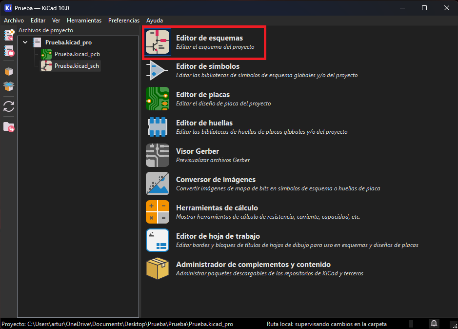
3. Agregar componentes al esquemático
Una vez dentro del esquemático, debemos agregar los componentes que necesitemos para la fabricación de la placa. Gracias a la librería FabLab, tenemos los componentes necesarios. Para buscar un componente, se puede presionar la tecla "A" o el botón indicado en la siguiente imagen.
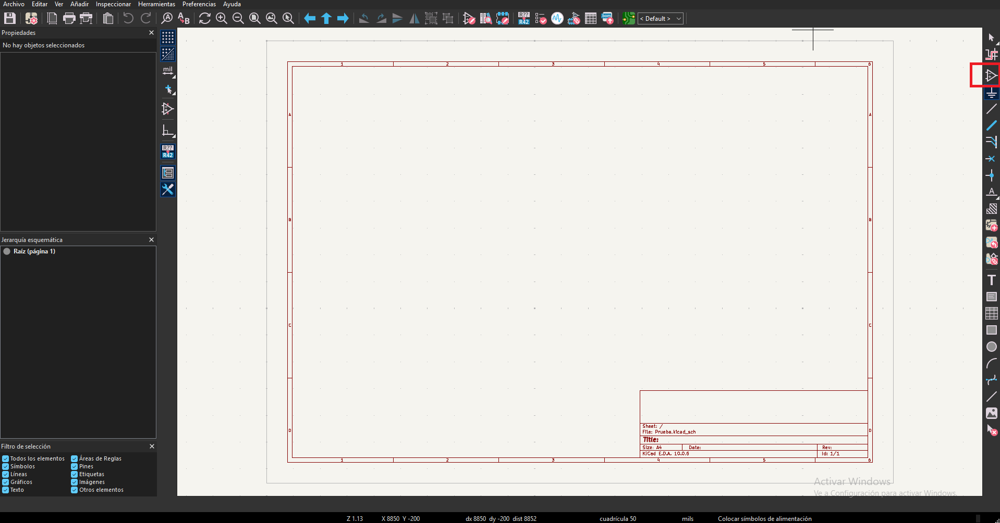
Una vez abierto el selector de componentes, podemos buscar los componentes que necesitemos mediante la barra de búsqueda ubicada en la parte superior izquierda. Es importante que los componentes que escojamos tengan una huella asignada, ya que, sin ella, no podrán utilizarse correctamente al cambiar al editor de placas. Un ejemplo de la huella se muestra en la siguiente imagen.
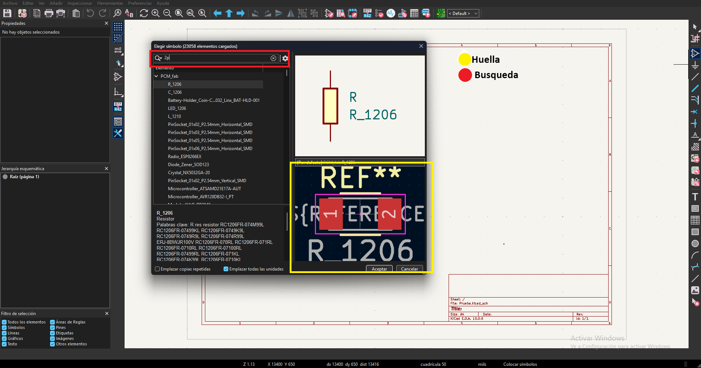
4. Fabricación del circuito en esquemático
Una vez que hayamos agregado todos los componentes necesarios, podemos proceder a elaborar el circuito en el esquemático. Tenemos dos maneras de unir los componentes: la primera es presionando la tecla "V" para dibujar cables, y la segunda es presionando el botón "Dibujar cables", como se muestra en la siguiente imagen.
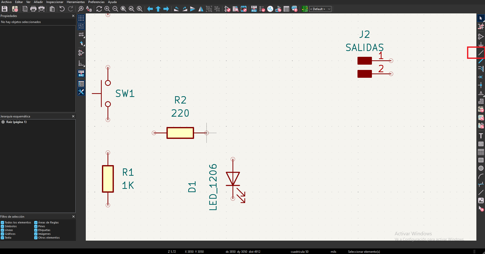
5. DRC (Design Rule Check)
Una vez que hayamos terminado de dibujar los cables, podemos ejecutar el DRC para verificar que el diseño cumpla con las reglas de diseño. El botón de DRC se encuentra en la barra de herramientas superior central, como se muestra en la imagen. En algunas versiones o configuraciones, esta herramienta puede aparecer como "ERC" si el programa está en español.
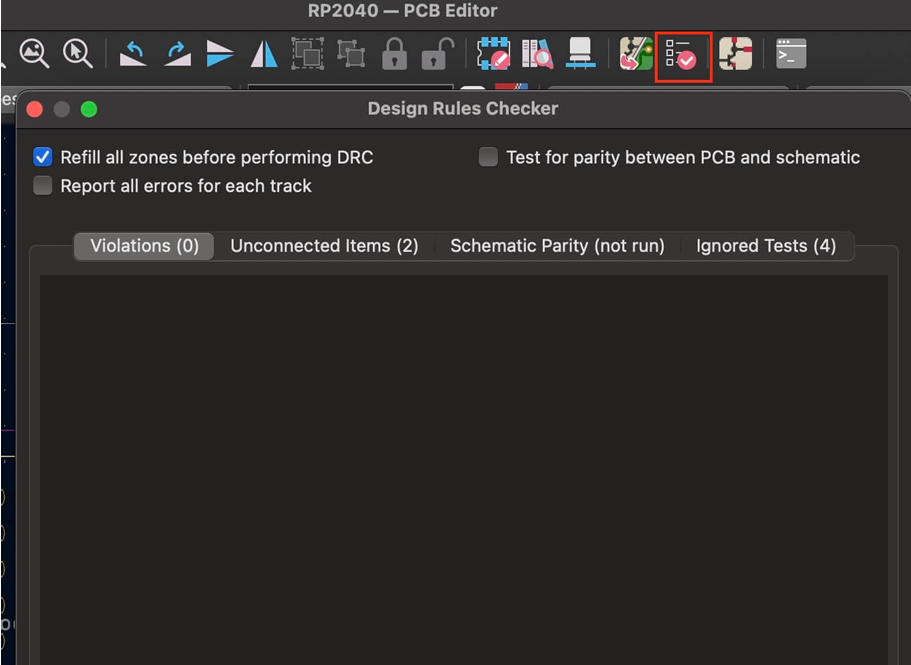
Una vez abierto el DRC, debemos seleccionar el botón que dice "Run DRC" o "Ejecutar ERC". Se mostrarán los errores que tengamos en nuestro diseño. Si no hay errores, aparecerá un mensaje indicando que el diseño está correcto y podremos continuar con la fabricación de la placa.
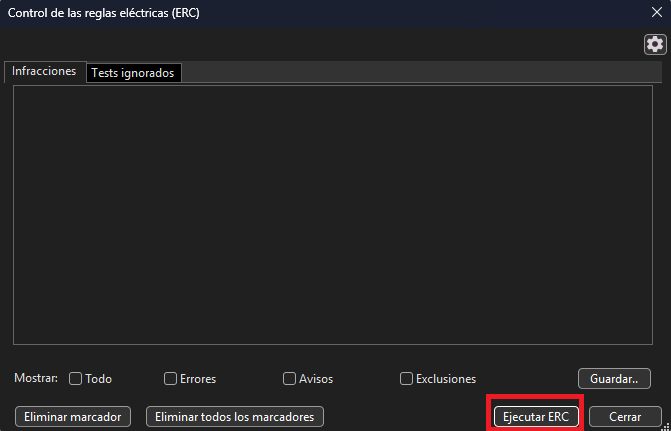
6. Editor de placas
Cuando nuestro diseño del esquemático esté listo, podemos pasar al editor de placas. Para ello, tenemos un botón llamado "Cambiar al editor de placas" en la barra de herramientas superior central; es el último botón de la derecha, como se muestra en la siguiente imagen.
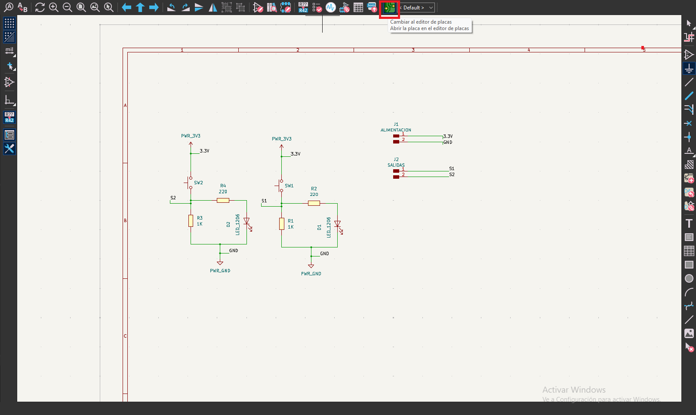
Para pasar nuestro circuito al editor de placas, debemos extraer la placa desde el esquemático. Para ello, utilizamos el botón "Extraer placa" o "Update Board" en la barra de herramientas superior central, como se indica en la siguiente imagen.
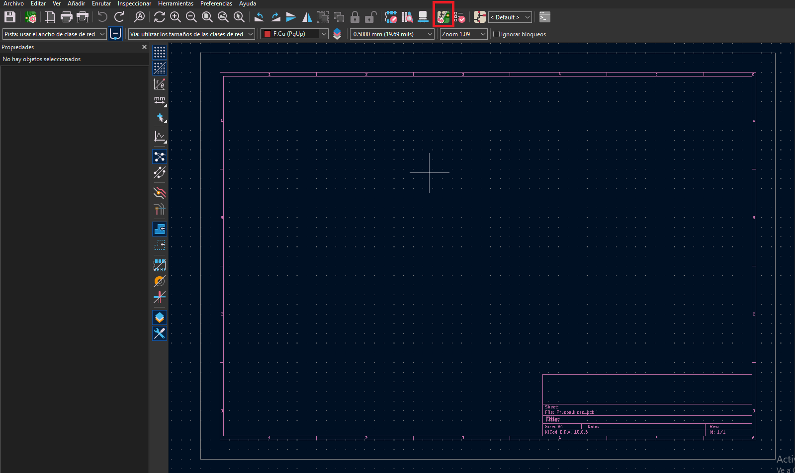
Una vez seleccionado el botón, aparecerá la siguiente ventana. Si la placa no presenta errores, podemos actualizarla desde el esquemático presionando el botón "Actualizar placa", como se muestra en la siguiente imagen.
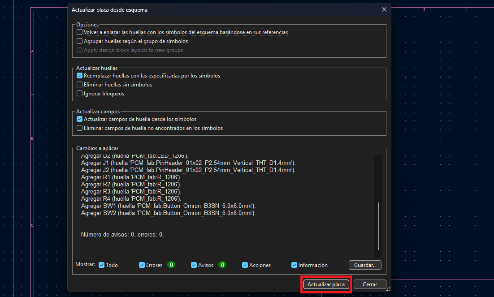
7. Distribución y ruteo de componentes en el editor de placas
Una vez dentro del editor de placas, vamos a distribuir los componentes que agregamos en el esquemático dentro del área de trabajo. Se recomienda acomodarlos de manera ordenada para facilitar el ruteo de las pistas y evitar cruces innecesarios.
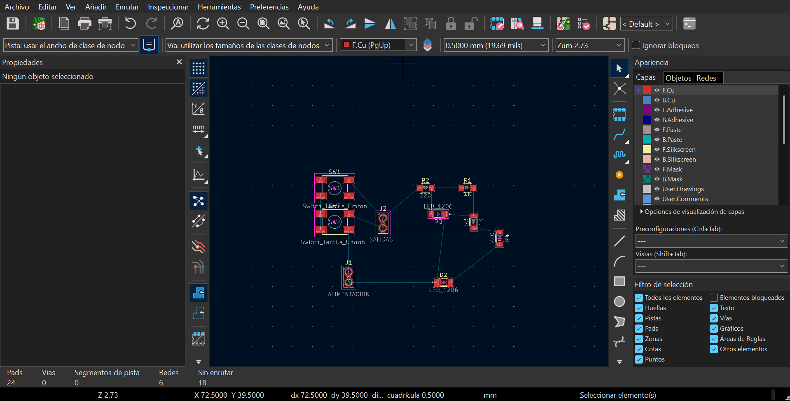
Posteriormente, se procede a rutear las pistas, uniendo cada componente según las conexiones definidas en el esquemático. Es importante revisar el ancho de las pistas y evitar cruces entre ellas para que el diseño quede funcional.
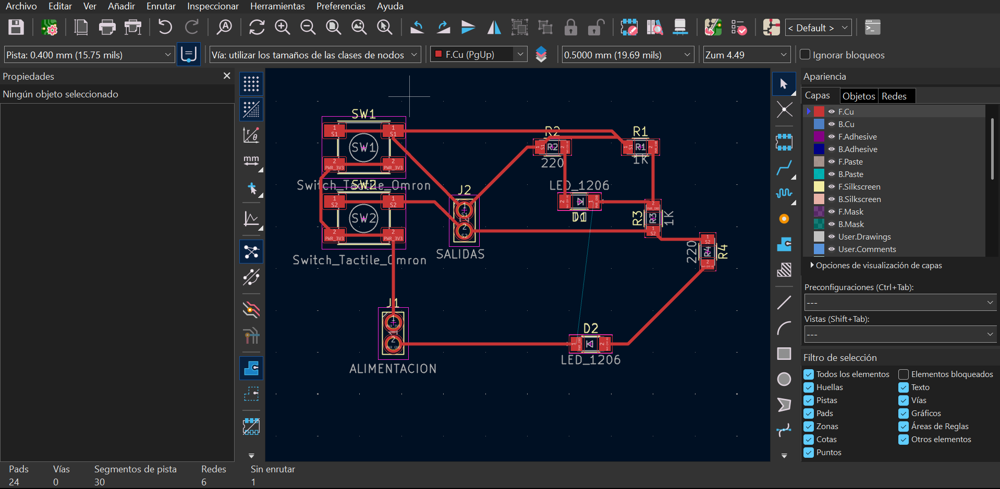
Para revisar o cambiar el ancho de las pistas, se puede modificar desde el botón indicado en la siguiente imagen, donde se define el grosor que tendrán las pistas al momento de fabricarlas.
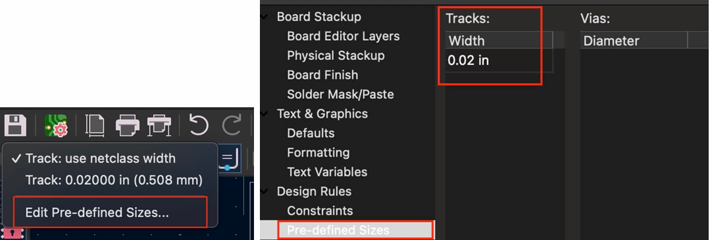
En caso de que alguna pista no pueda ser ruteada directamente, se puede agregar una resistencia de 0 Ω para realizar un puente y completar la conexión.
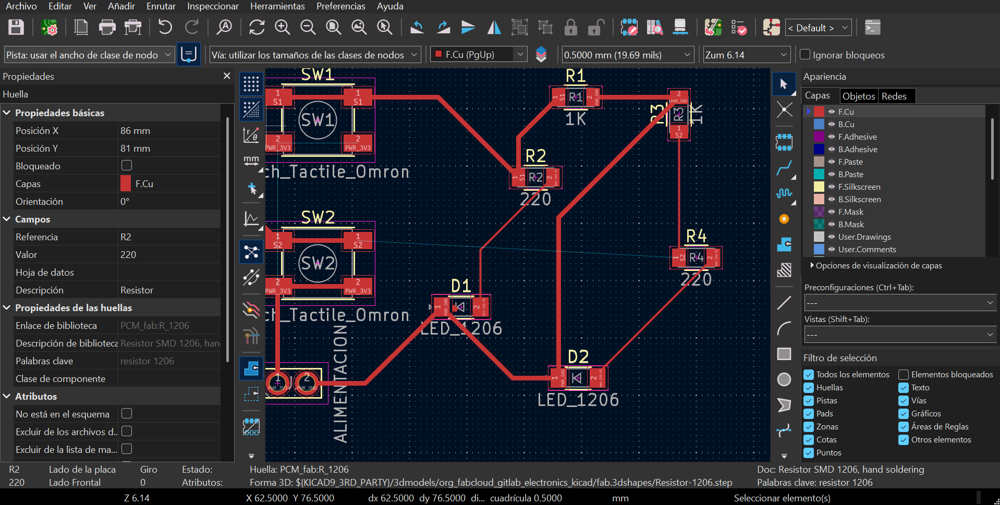
Se agrega la resistencia de 0 Ω en el editor de esquemas y luego se vuelve a actualizar la placa para completar las conexiones.
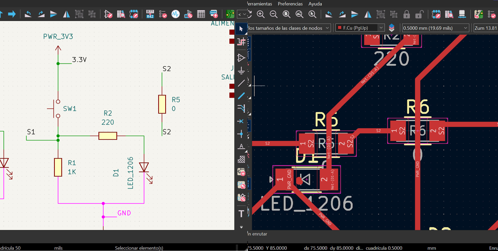
8. Contorno y finalización de la placa
Una vez terminado el ruteo, se realiza una revisión general de la placa para comprobar que todos los componentes estén correctamente colocados y que las pistas sigan las conexiones establecidas en el esquemático. Después, se realiza el contorno en la capa "Edge.Cuts" y se procede con el corte perimetral, como se muestra en la imagen.
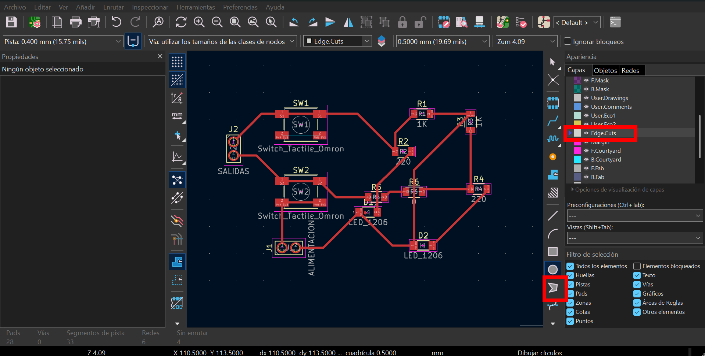
Mods
Documentación del uso de Mods · Primer corte.
1. Entrar a la página de Mods
Abrir el programa de Mods y hacer clic en la esquina superior izquierda, donde dice "Programs".
Después, bajar en la pestaña azul hasta "SRM-20 mill" y seleccionar la opción "mill 2D PCB".
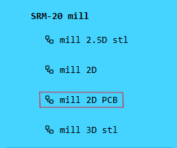
2. Seleccionar el archivo de las pistas
Seleccionar el archivo SVG de las pistas, dando click a "select SVG file".

3. Invertir las pistas
Si las pistas están invertidas, hacer clic en la opción "invert".
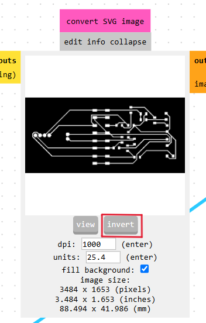
4. Seleccionar el cortador
Seleccionar el cortador con el que se harán las pistas, en este caso seleccionaremos "1/64 flat".
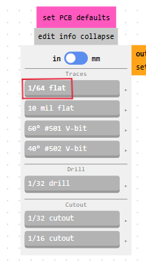
5. Calcular las pistas
Para saber cómo quedará nuestro corte, hacemos clic en la opción "calculate" y de esa manera sabremos como quedarían nuestras pistas y si tenemos que corregir o modificar algo.

6. Configurar el origen
Configurar el origen en el punto donde queremos que nuestra herramienta empiece al momento de cortar, en nuestro caso, los ejes X, Y y Z estarán en 0.
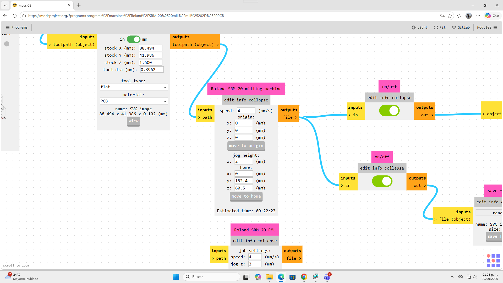
7. Guardar el archivo
Guardar el archivo para el corte.

8. Seleccionar el archivo del trazado
Seleccionar el archivo SVG del trazado.

9. Invertir trazado
Si es necesario, se puede invertir el trazado haciendo clic en "invert".

10. Seleccionar el cortador del trazado
Seleccionar el cortador que se utilizará para el trazado; en este caso, será "1/32 cutout".

11. Calcular el trazado
Para saber cómo quedará nuestro trazado, hacemos clic en "calculate" para que nos muestre como quedaría y saber si necesitamos hacer correcciones o modificaciones.

12. Configurar el origen
Configurar el origen de la herramienta que vamos a utilizar para el trazado.

13. Guardar el archivo
Guardar el archivo del trazado una vez que todo esté configurado como queremos.
Monofab
Documentación del uso de la Monofab · Primer corte.
1. Preparar la MonoFab
Encender la MonoFab, conectar el cable USB a la computadora y ejecutar el programa "MonoFab SRM-20".
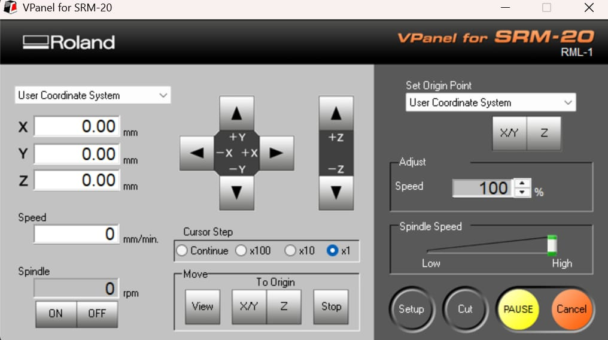
2. Configurar la MonoFab
Para el primer corte haremos las perforaciones, por lo que tendremos que colocar una fresa de 0.8 mm.
Posteriormente, dirigimos los ejes X/Y al punto de origen deseado y los establecemos en 0.
Después, hacemos lo mismo con el eje Z.

3. Ejecutar las perforaciones
Después de establecer en 0 los ejes X, Y y Z, seleccionamos el archivo correspondiente para iniciar el corte. En este caso, se harán primero las perforaciones.

4. Ejecutar el corte de las pistas
Luego de hacer las perforaciones, cambiamos la fresa a una de 0.4mm y regresamos al origen x/y, y repetimos el proceso con z, ya que al cambiar la fresa tenemos que volver a establecer en 0 este eje.
Después de hacer esto, seleccionamos el archivo de las pistas e iniciamos el corte.

5. Ejecutar el corte perimetral
Ahora cambiamos la fresa por una de 2.00 mm y repetimos el proceso para establecer nuevamente el eje Z. Finalmente, seleccionamos el archivo del perímetro e iniciamos el corte.

6. Revisar los resultados
Una vez que terminemos de cortar nuestra placa, revisamos que las perforaciones, las pistas y el trazado estén realizados correctamente. También verificamos que las pistas no estén invertidas.

Multisim
Documentación sobre Multisim · Segundo corte.
1. Instalación de Multisim
Para la instalación de Multisim debes primero crear una cuenta de NI, debe ser institucional para que puedas usar la versión estudiantil. Puedes descargar el archivo desde este enlace.
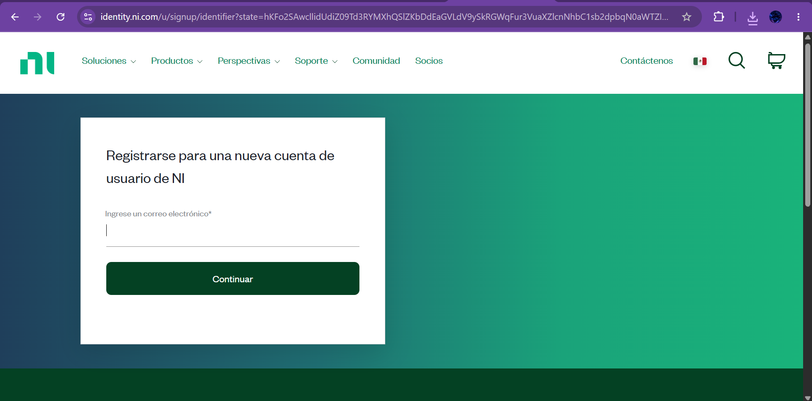
2. Interfaz de Multisim
Una vez abierto Multisim tendremos el siguiente menú, que es muy parecido a KiCad que habíamos usado con anterioridad. El GUI de Multisim aparece en la siguiente foto.
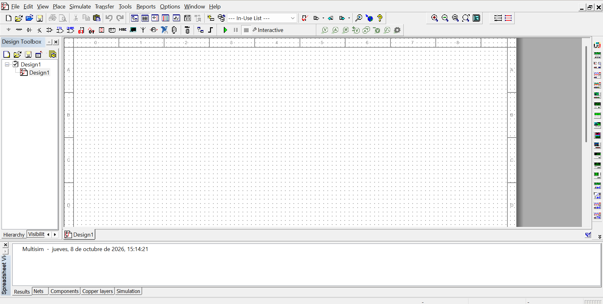
3. Funciones booleanas en Multisim
Las funciones booleanas en Multisim permiten realizar operaciones lógicas sobre los componentes del circuito, como uniones, intersecciones y diferencias. En clase vimos la siguiente función booleana.
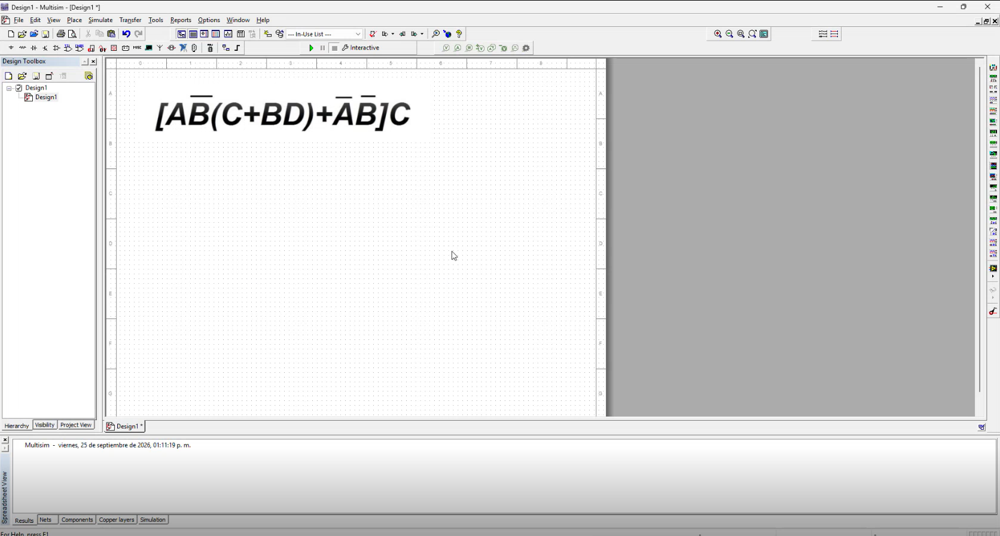
En la parte superior de la interfaz de Multisim, donde marca la siguiente imagen, se encuentran los componentes que pueden ser utilizados para crear funciones booleanas.
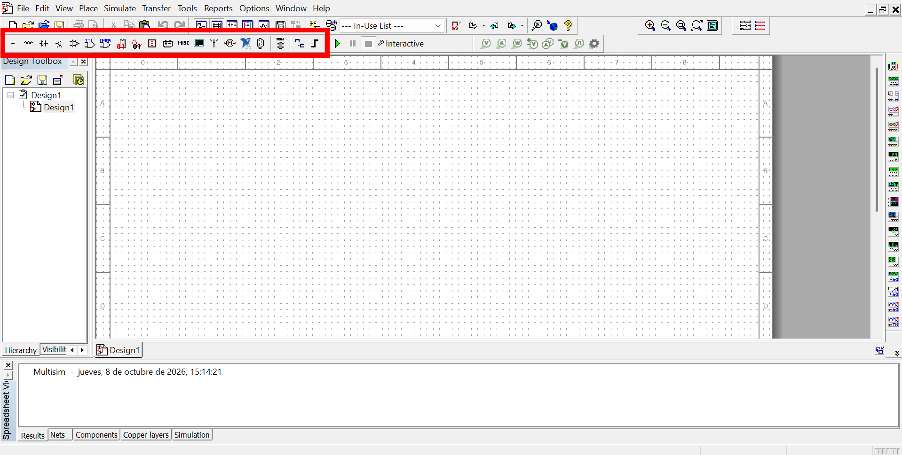
En este caso utilizamos el componente TTL indicado en la siguiente imagen.
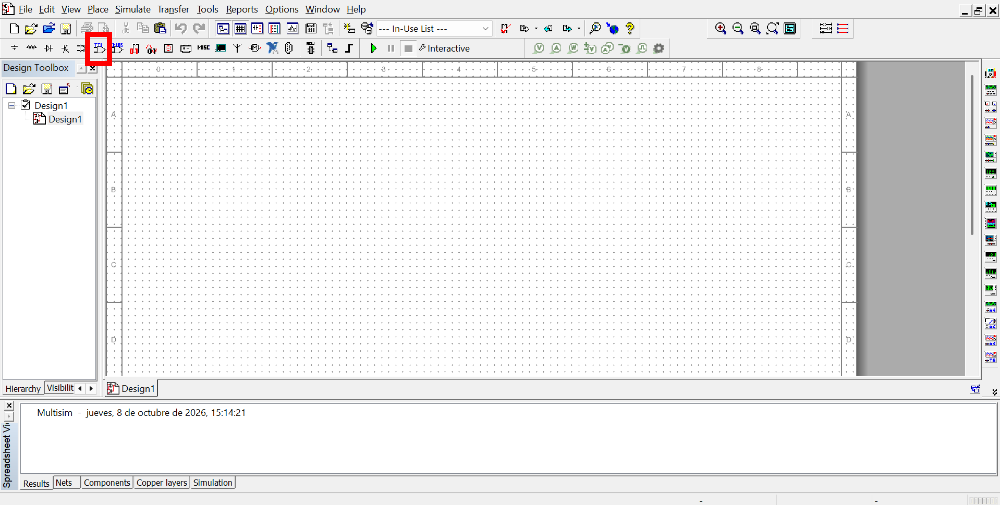
En la siguiente imagen, se muestran despues de seleccionar TTL las familias decomponentes que pueden ser utilizados para crear funciones booleanas, en este caso utilizaremos el componente 74ALS08N ya que es una multiplicacion con 2 entradas y una salida.
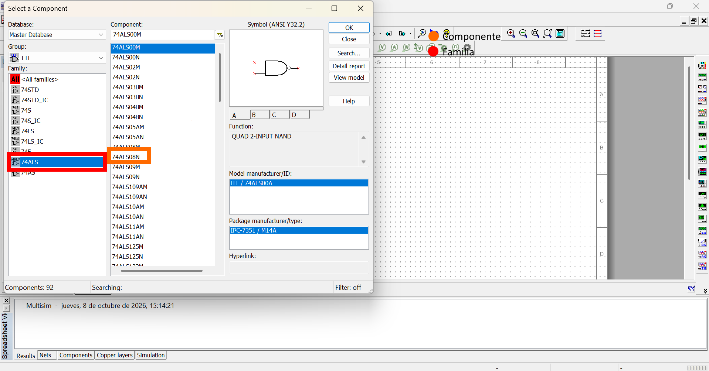
En este caso utilizaremos 4 compuertas o componentes 74ALS08N ya que ocupamos por el momento 4 multiplicaciones.
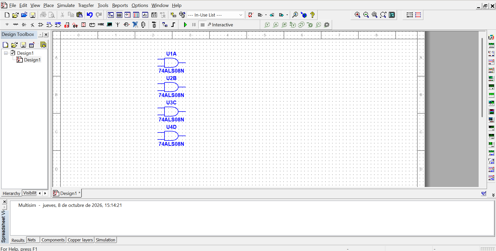
Ahora debemos agregar una señal, en este caso sera una señal constante pero se puede elegir entre diferentes tipos de señales, para poder agregarla al circuito debemos seleccionar el boton de tierra que se muestra en la siguiente imagen.
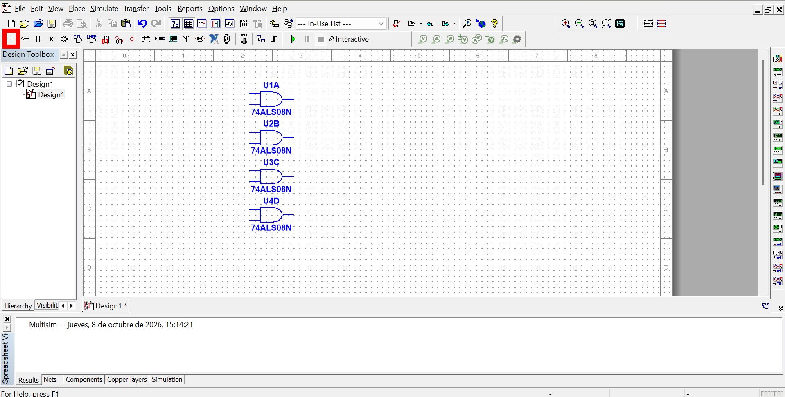
Una vez seleccionado el botón de tierra, aparecera un menu de familias, se debe seleccionar DIGITAL_SOURCES para seleccionar la señal constante se debe seleccionar INTERACTIVE_DIGITAL_CONSTANT como se muestra en la siguiente imagen.
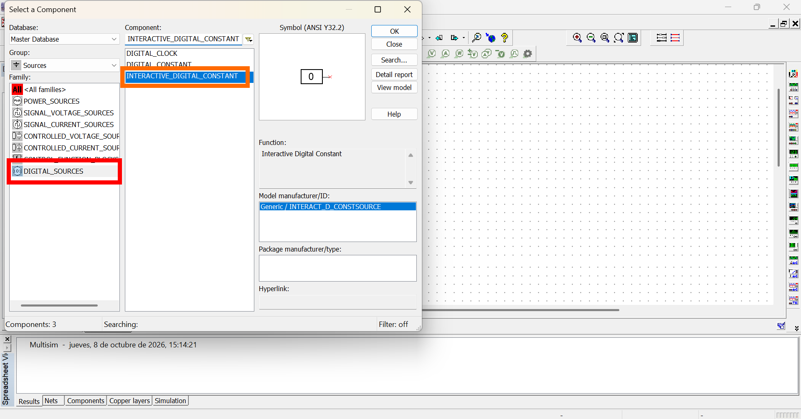
Una vez puestas todas las señales que necesitemos debemos agregar nodos acercandonos al final de la señal y esperar a que el cursor cambie de forma, despues damos click izquierdo y creamos una pequeña linea y cerramos la linea con otro click izquierdo como se muestra en la siguiente imagen.
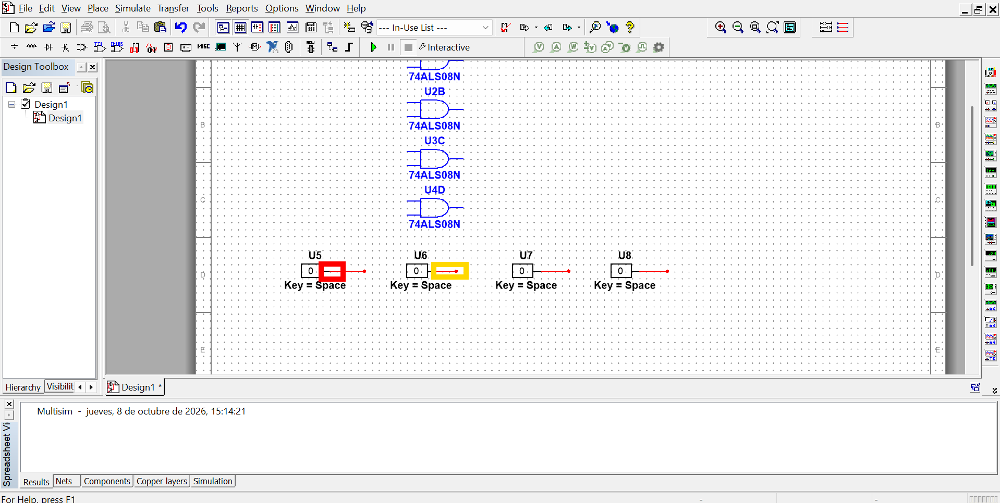
Para nombrar los nodos se debe dar doble click sobre la linea para nombrar el nodo como se muestra en la siguiente imagen de color rojo, se debe marcar la casilla show net name como se muestra en la siguiente imagen.
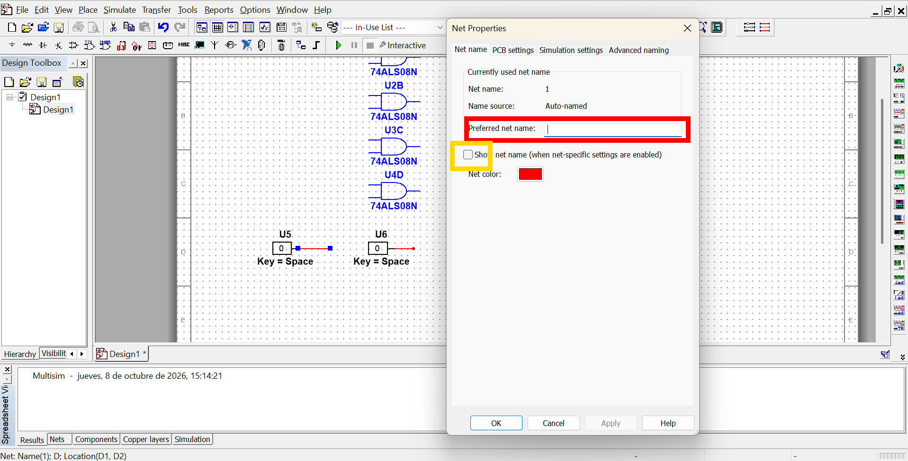
4. Corte en la MonoFab
Se realizó el corte en la MonoFab SRM-20: primero las perforaciones con fresa de 0.8 mm, después las pistas con fresa de 0.4 mm, y por último el corte perimetral con fresa de 2.00 mm. En cada cambio de fresa se recalibró el eje Z.

5. Resultado final
Se revisó el resultado final del segundo corte: pistas continuas, perforaciones limpias y contorno bien definido. La placa quedó lista para soldar los componentes.